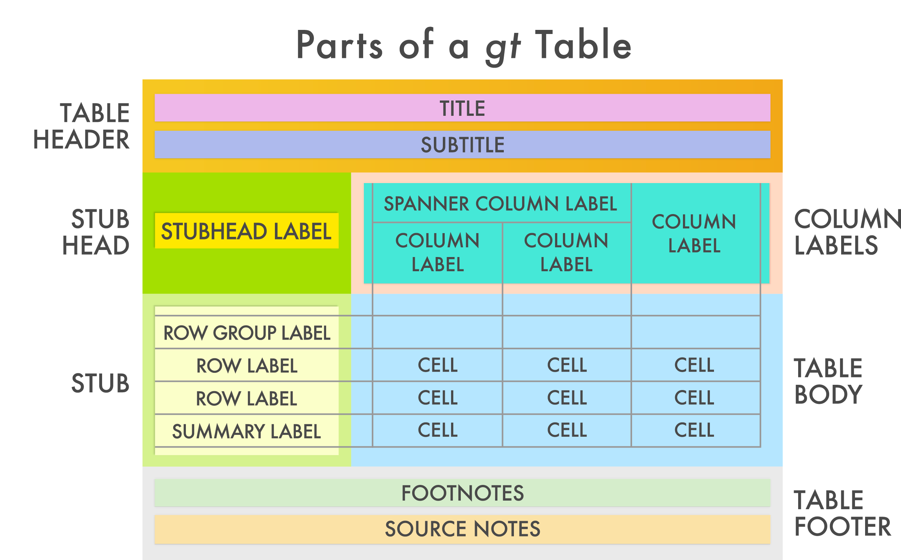

# load libraries
library(tidyverse)
library(gt) # remember to install gt in the first instance with install.packages("gt")
# import data
stroke_mortality_raw <- read_csv("https://www.opendata.nhs.scot/dataset/f5dcf382-e6ca-49f6-b807-4f9cc29555bc/resource/19c01b59-6cf7-42a9-876a-b07b9b92d6eb/download/stroke_mortalitybyhbr.csv")
hb <- read_csv("https://www.opendata.nhs.scot/dataset/9f942fdb-e59e-44f5-b534-d6e17229cc7b/resource/652ff726-e676-4a20-abda-435b98dd7bdc/download/hb14_hb19.csv")
stroke_mortality <- stroke_mortality_raw %>%
# Join cancelled to hb
left_join(hb, join_by(Hbr == HB)) %>%
# select the variables we are interested in
select(Year, HBName, AgeGroup, Sex, Diagnosis, NumberOfDeaths, CrudeRate, EASR) %>%
# filter out aggregate levels of the variables
filter(Sex != "All" & AgeGroup != "All")Creating more exciting tables
The gt Package
There are many packages which can be used to create tables in R. We have already looked at knitr::kable() and KableExtra in the course. Another popular table package is flextable, which is particularly powerful for making tables in Word. If you are interested, you can find a nice overview of packages for tables in R here.
gt is the table compliment to the ggplot2 package for making plots - the first g in both cases meaning “grammar”. gt meaning “grammar of tables” and the gg in ggplot2 meaning “grammar of graphics”. This underlying general philosophy of tables makes the gt package easy to use (with some practice) and extremely flexible and customisable.
Just as we build our plots in ggplot2 with layers, we can build gt tables by editing each part or layer of the table. As the gt developers outline: “The gt philosophy: we can construct a wide variety of useful tables with a cohesive set of table parts. These include the table header, the stub, the column labels and spanner column labels, the table body, and the table footer.”

The gt package webpages have an excellent introduction to greating gt Tables, which you can find here.
Thomas Mock has some excellent resources on his blog as well which you may find helpful in getting accustomed to the gt package and its wide-ranging functionalities: gt cookbook as well as the advanced gt cookbook and more advanced making beautiful tables with gtExtra.
Note: You are not expected to master gt nor the advanced elements of gt for this course. If you are interested, some advanced resources are included here. The gt introduction and gt cookbook would are a good place to start if you wish to explore the package and creating tables over and above what is covered in this optional Topic.
The gt table workflow
Not only is gt like ggplot2 but for tables, but it also follows tidyverse conventions! This means you can pipe your wrangled data into the gt() function seemlessly.
A typical gt Table workflow is visualized below:

You begin with a preprocessed tabular data, such as a tibble. Next you create your gt table and customize it to your needs. Finally, the table is rendered by printing it at the console, including it in an R Markdown document, or exporting to a file using the gtsave() function.
The code can look a bit scary, but do not fear! Think about it as writing down in code all of the edits that you would make to a table in Word - only now it is reproducible as you have written this in code!
An example of gt workflow
The data
As with everything we have learned about in programming in this course, we must first start with the data.
We will be using a new dataset from Public Health Scotland:
Let’s start out with some data wrangling to get the data ready for presentation in a table
Create a gt table with gt()
For sake of simplicity, let’s say that we are specifically interested in the year 2020, adults 75 years old or older, and in 2 Health Boards: NHS Borders and NHS Fife.
To create a gt table object, all you need to do is pass your dataset, plus any data wrangling, to the gt() function. Because the gt package follows tidyverse conventions, our good friend the pipe (%>%) will continue to be useful to us here to use the gt functions to modify the gt table object!
stroke_mortality %>%
filter(Year == 2020,
AgeGroup == "75plus years",
HBName %in% c("NHS Borders", "NHS Fife")) %>%
gt()| Year | HBName | AgeGroup | Sex | Diagnosis | NumberOfDeaths | CrudeRate | EASR |
|---|---|---|---|---|---|---|---|
| 2020 | NHS Borders | 75plus years | Male | Cerebrovascular Disease | 23 | 393.633407 | 424.306091 |
| 2020 | NHS Borders | 75plus years | Female | Cerebrovascular Disease | 46 | 617.947340 | 609.187745 |
| 2020 | NHS Fife | 75plus years | Male | Cerebrovascular Disease | 98 | 667.393081 | 757.712097 |
| 2020 | NHS Fife | 75plus years | Female | Cerebrovascular Disease | 151 | 761.818274 | 742.539160 |
| 2020 | NHS Borders | 75plus years | Male | stroke | 17 | 290.946432 | 314.000526 |
| 2020 | NHS Borders | 75plus years | Female | stroke | 35 | 470.177324 | 463.058843 |
| 2020 | NHS Fife | 75plus years | Male | stroke | 52 | 354.126941 | 396.146064 |
| 2020 | NHS Fife | 75plus years | Female | stroke | 87 | 438.928409 | 428.374773 |
| 2020 | NHS Borders | 75plus years | Male | Subaracahnoid Haemorrhage | 1 | 17.114496 | 16.835017 |
| 2020 | NHS Borders | 75plus years | Female | Subaracahnoid Haemorrhage | 1 | 13.433638 | 14.804945 |
| 2020 | NHS Fife | 75plus years | Male | Subaracahnoid Haemorrhage | 1 | 6.810133 | 10.797970 |
| 2020 | NHS Fife | 75plus years | Female | Subaracahnoid Haemorrhage | 1 | 5.045154 | 5.460676 |
| 2020 | NHS Borders | 75plus years | Male | TIAs and related syndromes | 0 | 0.000000 | 0.000000 |
| 2020 | NHS Borders | 75plus years | Female | TIAs and related syndromes | 0 | 0.000000 | 0.000000 |
| 2020 | NHS Fife | 75plus years | Male | TIAs and related syndromes | 0 | 0.000000 | 0.000000 |
| 2020 | NHS Fife | 75plus years | Female | TIAs and related syndromes | 1 | 5.045154 | 5.059705 |
Because we have filtered the data to only be for one Year and one AgeGroup, it is not necessarily relevant to include them in the table as we can highlight what data is presented in the table title (covered later in this tutorial). In this case, you can first select only the variables you are interested in showing in the table before creating the gt object.
stroke_mortality %>%
filter(Year == 2020,
AgeGroup == "75plus years",
HBName %in% c("NHS Borders", "NHS Fife")) %>%
select(HBName,
Sex,
Diagnosis,
NumberOfDeaths,
CrudeRate,
EASR) %>%
gt()| HBName | Sex | Diagnosis | NumberOfDeaths | CrudeRate | EASR |
|---|---|---|---|---|---|
| NHS Borders | Male | Cerebrovascular Disease | 23 | 393.633407 | 424.306091 |
| NHS Borders | Female | Cerebrovascular Disease | 46 | 617.947340 | 609.187745 |
| NHS Fife | Male | Cerebrovascular Disease | 98 | 667.393081 | 757.712097 |
| NHS Fife | Female | Cerebrovascular Disease | 151 | 761.818274 | 742.539160 |
| NHS Borders | Male | stroke | 17 | 290.946432 | 314.000526 |
| NHS Borders | Female | stroke | 35 | 470.177324 | 463.058843 |
| NHS Fife | Male | stroke | 52 | 354.126941 | 396.146064 |
| NHS Fife | Female | stroke | 87 | 438.928409 | 428.374773 |
| NHS Borders | Male | Subaracahnoid Haemorrhage | 1 | 17.114496 | 16.835017 |
| NHS Borders | Female | Subaracahnoid Haemorrhage | 1 | 13.433638 | 14.804945 |
| NHS Fife | Male | Subaracahnoid Haemorrhage | 1 | 6.810133 | 10.797970 |
| NHS Fife | Female | Subaracahnoid Haemorrhage | 1 | 5.045154 | 5.460676 |
| NHS Borders | Male | TIAs and related syndromes | 0 | 0.000000 | 0.000000 |
| NHS Borders | Female | TIAs and related syndromes | 0 | 0.000000 | 0.000000 |
| NHS Fife | Male | TIAs and related syndromes | 0 | 0.000000 | 0.000000 |
| NHS Fife | Female | TIAs and related syndromes | 1 | 5.045154 | 5.059705 |
Modify columns with the cols_*() functions
Column labels, cell alignment, column width, and placement as well as combine multiple columns with the range of cols_*() functions.
For example, cols_label() is particularly useful to rename columns to more informative names than what the variable is called in the dataset. This changes the labels of the columns, as per the function name, not the underlying column names (which remain the name of the variable in your dataset). Tables should be able to be understood by people who are not familiar with your dataset, so it is important for your variables to have informative names.
stroke_mortality %>%
filter(Year == 2020,
AgeGroup == "75plus years",
HBName %in% c("NHS Borders", "NHS Fife")) %>%
select(HBName,
Sex,
Diagnosis,
NumberOfDeaths,
CrudeRate,
EASR) %>%
gt() %>%
cols_label(HBName = "Health Board",
NumberOfDeaths = "Number of Deaths",
CrudeRate = "Crude Rate",
EASR = "European Age-Sex Standardised Rate") | Health Board | Sex | Diagnosis | Number of Deaths | Crude Rate | European Age-Sex Standardised Rate |
|---|---|---|---|---|---|
| NHS Borders | Male | Cerebrovascular Disease | 23 | 393.633407 | 424.306091 |
| NHS Borders | Female | Cerebrovascular Disease | 46 | 617.947340 | 609.187745 |
| NHS Fife | Male | Cerebrovascular Disease | 98 | 667.393081 | 757.712097 |
| NHS Fife | Female | Cerebrovascular Disease | 151 | 761.818274 | 742.539160 |
| NHS Borders | Male | stroke | 17 | 290.946432 | 314.000526 |
| NHS Borders | Female | stroke | 35 | 470.177324 | 463.058843 |
| NHS Fife | Male | stroke | 52 | 354.126941 | 396.146064 |
| NHS Fife | Female | stroke | 87 | 438.928409 | 428.374773 |
| NHS Borders | Male | Subaracahnoid Haemorrhage | 1 | 17.114496 | 16.835017 |
| NHS Borders | Female | Subaracahnoid Haemorrhage | 1 | 13.433638 | 14.804945 |
| NHS Fife | Male | Subaracahnoid Haemorrhage | 1 | 6.810133 | 10.797970 |
| NHS Fife | Female | Subaracahnoid Haemorrhage | 1 | 5.045154 | 5.460676 |
| NHS Borders | Male | TIAs and related syndromes | 0 | 0.000000 | 0.000000 |
| NHS Borders | Female | TIAs and related syndromes | 0 | 0.000000 | 0.000000 |
| NHS Fife | Male | TIAs and related syndromes | 0 | 0.000000 | 0.000000 |
| NHS Fife | Female | TIAs and related syndromes | 1 | 5.045154 | 5.059705 |
cols_align() aligns all text within a column. You can specify which columns to align using vars() - notice that the arguments are the original variable names. Commonly, the convention is to left-align text with varying length and right-align numbers. You can align different columns different ways by adding multiple cols_align() layers.
stroke_mortality %>%
filter(Year == 2020,
AgeGroup == "75plus years",
HBName %in% c("NHS Borders", "NHS Fife")) %>%
select(HBName,
Sex,
Diagnosis,
NumberOfDeaths,
CrudeRate,
EASR) %>%
gt() %>%
cols_label(HBName = "Health Board",
NumberOfDeaths = "Number of Deaths",
CrudeRate = "Crude Rate",
EASR = "European Age-Sex Standardised Rate") %>%
cols_align(align = "center",
columns = NumberOfDeaths)| Health Board | Sex | Diagnosis | Number of Deaths | Crude Rate | European Age-Sex Standardised Rate |
|---|---|---|---|---|---|
| NHS Borders | Male | Cerebrovascular Disease | 23 | 393.633407 | 424.306091 |
| NHS Borders | Female | Cerebrovascular Disease | 46 | 617.947340 | 609.187745 |
| NHS Fife | Male | Cerebrovascular Disease | 98 | 667.393081 | 757.712097 |
| NHS Fife | Female | Cerebrovascular Disease | 151 | 761.818274 | 742.539160 |
| NHS Borders | Male | stroke | 17 | 290.946432 | 314.000526 |
| NHS Borders | Female | stroke | 35 | 470.177324 | 463.058843 |
| NHS Fife | Male | stroke | 52 | 354.126941 | 396.146064 |
| NHS Fife | Female | stroke | 87 | 438.928409 | 428.374773 |
| NHS Borders | Male | Subaracahnoid Haemorrhage | 1 | 17.114496 | 16.835017 |
| NHS Borders | Female | Subaracahnoid Haemorrhage | 1 | 13.433638 | 14.804945 |
| NHS Fife | Male | Subaracahnoid Haemorrhage | 1 | 6.810133 | 10.797970 |
| NHS Fife | Female | Subaracahnoid Haemorrhage | 1 | 5.045154 | 5.460676 |
| NHS Borders | Male | TIAs and related syndromes | 0 | 0.000000 | 0.000000 |
| NHS Borders | Female | TIAs and related syndromes | 0 | 0.000000 | 0.000000 |
| NHS Fife | Male | TIAs and related syndromes | 0 | 0.000000 | 0.000000 |
| NHS Fife | Female | TIAs and related syndromes | 1 | 5.045154 | 5.059705 |
cols_move_*() set of functions allows you to move columns to the start or end (or wherever you want!) in your table. To move a column to the start we use cols_move_to_start() and to move a column to the end, the function is cols_move_to_end().
stroke_mortality %>%
filter(Year == 2020,
AgeGroup == "75plus years",
HBName %in% c("NHS Borders", "NHS Fife")) %>%
select(HBName,
Sex,
Diagnosis,
NumberOfDeaths,
CrudeRate,
EASR) %>%
gt() %>%
# to move the diagnosis and Sex columns to the start
cols_move_to_start(columns = c(Diagnosis, Sex)) %>%
# to move the HBName after Number of Deaths
cols_move(columns = HBName, after = NumberOfDeaths) %>%
cols_label(HBName = "Health Board",
NumberOfDeaths = "Number of Deaths",
CrudeRate = "Crude Rate",
EASR = "European Age-Sex Standardised Rate") %>%
cols_align(align = "center", columns = NumberOfDeaths)| Diagnosis | Sex | Number of Deaths | Health Board | Crude Rate | European Age-Sex Standardised Rate |
|---|---|---|---|---|---|
| Cerebrovascular Disease | Male | 23 | NHS Borders | 393.633407 | 424.306091 |
| Cerebrovascular Disease | Female | 46 | NHS Borders | 617.947340 | 609.187745 |
| Cerebrovascular Disease | Male | 98 | NHS Fife | 667.393081 | 757.712097 |
| Cerebrovascular Disease | Female | 151 | NHS Fife | 761.818274 | 742.539160 |
| stroke | Male | 17 | NHS Borders | 290.946432 | 314.000526 |
| stroke | Female | 35 | NHS Borders | 470.177324 | 463.058843 |
| stroke | Male | 52 | NHS Fife | 354.126941 | 396.146064 |
| stroke | Female | 87 | NHS Fife | 438.928409 | 428.374773 |
| Subaracahnoid Haemorrhage | Male | 1 | NHS Borders | 17.114496 | 16.835017 |
| Subaracahnoid Haemorrhage | Female | 1 | NHS Borders | 13.433638 | 14.804945 |
| Subaracahnoid Haemorrhage | Male | 1 | NHS Fife | 6.810133 | 10.797970 |
| Subaracahnoid Haemorrhage | Female | 1 | NHS Fife | 5.045154 | 5.460676 |
| TIAs and related syndromes | Male | 0 | NHS Borders | 0.000000 | 0.000000 |
| TIAs and related syndromes | Female | 0 | NHS Borders | 0.000000 | 0.000000 |
| TIAs and related syndromes | Male | 0 | NHS Fife | 0.000000 | 0.000000 |
| TIAs and related syndromes | Female | 1 | NHS Fife | 5.045154 | 5.059705 |
Format columns with the fmt_*() functions
To format values within columns, you can use the range of fmt_*() functions.
fmt_number() formats numeric (number-based) columns. For example, using the argument decimal = 2 you can set a decimal place or add a suffix such as K for thousands to large numbers using suffixing = TRUE.
stroke_mortality %>%
filter(Year == 2020,
AgeGroup == "75plus years",
HBName %in% c("NHS Borders", "NHS Fife")) %>%
select(HBName, Sex, Diagnosis, NumberOfDeaths, CrudeRate, EASR) %>%
gt() %>%
fmt_number(columns = c(CrudeRate, EASR), decimals = 3)| HBName | Sex | Diagnosis | NumberOfDeaths | CrudeRate | EASR |
|---|---|---|---|---|---|
| NHS Borders | Male | Cerebrovascular Disease | 23 | 393.633 | 424.306 |
| NHS Borders | Female | Cerebrovascular Disease | 46 | 617.947 | 609.188 |
| NHS Fife | Male | Cerebrovascular Disease | 98 | 667.393 | 757.712 |
| NHS Fife | Female | Cerebrovascular Disease | 151 | 761.818 | 742.539 |
| NHS Borders | Male | stroke | 17 | 290.946 | 314.001 |
| NHS Borders | Female | stroke | 35 | 470.177 | 463.059 |
| NHS Fife | Male | stroke | 52 | 354.127 | 396.146 |
| NHS Fife | Female | stroke | 87 | 438.928 | 428.375 |
| NHS Borders | Male | Subaracahnoid Haemorrhage | 1 | 17.114 | 16.835 |
| NHS Borders | Female | Subaracahnoid Haemorrhage | 1 | 13.434 | 14.805 |
| NHS Fife | Male | Subaracahnoid Haemorrhage | 1 | 6.810 | 10.798 |
| NHS Fife | Female | Subaracahnoid Haemorrhage | 1 | 5.045 | 5.461 |
| NHS Borders | Male | TIAs and related syndromes | 0 | 0.000 | 0.000 |
| NHS Borders | Female | TIAs and related syndromes | 0 | 0.000 | 0.000 |
| NHS Fife | Male | TIAs and related syndromes | 0 | 0.000 | 0.000 |
| NHS Fife | Female | TIAs and related syndromes | 1 | 5.045 | 5.060 |
fmt_percent() formats numbers into percents and includes the % symbol for us. By default, the values are multiplied by 100 before adding the % symbol. So, if your data is already multiplied by 100, use the scale_value = FALSE argument to tell R that the input is not a proportion.
stroke_mortality %>%
filter(Year == 2020,
AgeGroup == "75plus years",
HBName %in% c("NHS Borders", "NHS Fife")) %>%
select(HBName,
Sex,
Diagnosis,
NumberOfDeaths,
CrudeRate,
EASR) %>%
gt() %>%
fmt_percent(columns = c(CrudeRate, EASR), decimals = 0, scale_value = FALSE)| HBName | Sex | Diagnosis | NumberOfDeaths | CrudeRate | EASR |
|---|---|---|---|---|---|
| NHS Borders | Male | Cerebrovascular Disease | 23 | 394% | 424% |
| NHS Borders | Female | Cerebrovascular Disease | 46 | 618% | 609% |
| NHS Fife | Male | Cerebrovascular Disease | 98 | 667% | 758% |
| NHS Fife | Female | Cerebrovascular Disease | 151 | 762% | 743% |
| NHS Borders | Male | stroke | 17 | 291% | 314% |
| NHS Borders | Female | stroke | 35 | 470% | 463% |
| NHS Fife | Male | stroke | 52 | 354% | 396% |
| NHS Fife | Female | stroke | 87 | 439% | 428% |
| NHS Borders | Male | Subaracahnoid Haemorrhage | 1 | 17% | 17% |
| NHS Borders | Female | Subaracahnoid Haemorrhage | 1 | 13% | 15% |
| NHS Fife | Male | Subaracahnoid Haemorrhage | 1 | 7% | 11% |
| NHS Fife | Female | Subaracahnoid Haemorrhage | 1 | 5% | 5% |
| NHS Borders | Male | TIAs and related syndromes | 0 | 0% | 0% |
| NHS Borders | Female | TIAs and related syndromes | 0 | 0% | 0% |
| NHS Fife | Male | TIAs and related syndromes | 0 | 0% | 0% |
| NHS Fife | Female | TIAs and related syndromes | 1 | 5% | 5% |
sub_missing() formats the default NA missing values in R to be a dash instead. As the subset of data we have been using does not have any NAs, we need to first change the data filtering a bit of our code to include NA values.
stroke_mortality %>%
filter(Year == 2012,
AgeGroup == "75plus years",
HBName %in% c("NHS Orkney", "NHS Grampian")) %>%
select(-Year, -AgeGroup) %>%
gt() %>%
sub_missing(columns = c(NumberOfDeaths, CrudeRate))| HBName | Sex | Diagnosis | NumberOfDeaths | CrudeRate | EASR |
|---|
…and now to the stub (or rows)!
The stub is typically a column of row labels that does not have or need a column label.
Add a grouping using the rowname_col argument
There are two ways in which you can add a grouping variable to your table, which differ in aesthetics
- by passing grouped data to the
gt()function
stroke_mortality %>%
filter(Year == 2020,
AgeGroup == "75plus years",
HBName %in% c("NHS Borders", "NHS Fife")) %>%
select(-Year, - AgeGroup) %>%
group_by(Sex) %>%
gt()| HBName | Diagnosis | NumberOfDeaths | CrudeRate | EASR |
|---|---|---|---|---|
| Male | ||||
| NHS Borders | Cerebrovascular Disease | 23 | 393.633407 | 424.306091 |
| NHS Fife | Cerebrovascular Disease | 98 | 667.393081 | 757.712097 |
| NHS Borders | stroke | 17 | 290.946432 | 314.000526 |
| NHS Fife | stroke | 52 | 354.126941 | 396.146064 |
| NHS Borders | Subaracahnoid Haemorrhage | 1 | 17.114496 | 16.835017 |
| NHS Fife | Subaracahnoid Haemorrhage | 1 | 6.810133 | 10.797970 |
| NHS Borders | TIAs and related syndromes | 0 | 0.000000 | 0.000000 |
| NHS Fife | TIAs and related syndromes | 0 | 0.000000 | 0.000000 |
| Female | ||||
| NHS Borders | Cerebrovascular Disease | 46 | 617.947340 | 609.187745 |
| NHS Fife | Cerebrovascular Disease | 151 | 761.818274 | 742.539160 |
| NHS Borders | stroke | 35 | 470.177324 | 463.058843 |
| NHS Fife | stroke | 87 | 438.928409 | 428.374773 |
| NHS Borders | Subaracahnoid Haemorrhage | 1 | 13.433638 | 14.804945 |
| NHS Fife | Subaracahnoid Haemorrhage | 1 | 5.045154 | 5.460676 |
| NHS Borders | TIAs and related syndromes | 0 | 0.000000 | 0.000000 |
| NHS Fife | TIAs and related syndromes | 1 | 5.045154 | 5.059705 |
- specify
rowname_colwithingt()
stroke_mortality %>%
filter(Year == 2020,
AgeGroup == "75plus years",
HBName %in% c("NHS Borders", "NHS Fife")) %>%
select(-Year, - AgeGroup) %>%
gt(rowname_col = "Sex")| HBName | Diagnosis | NumberOfDeaths | CrudeRate | EASR | |
|---|---|---|---|---|---|
| Male | NHS Borders | Cerebrovascular Disease | 23 | 393.633407 | 424.306091 |
| Female | NHS Borders | Cerebrovascular Disease | 46 | 617.947340 | 609.187745 |
| Male | NHS Fife | Cerebrovascular Disease | 98 | 667.393081 | 757.712097 |
| Female | NHS Fife | Cerebrovascular Disease | 151 | 761.818274 | 742.539160 |
| Male | NHS Borders | stroke | 17 | 290.946432 | 314.000526 |
| Female | NHS Borders | stroke | 35 | 470.177324 | 463.058843 |
| Male | NHS Fife | stroke | 52 | 354.126941 | 396.146064 |
| Female | NHS Fife | stroke | 87 | 438.928409 | 428.374773 |
| Male | NHS Borders | Subaracahnoid Haemorrhage | 1 | 17.114496 | 16.835017 |
| Female | NHS Borders | Subaracahnoid Haemorrhage | 1 | 13.433638 | 14.804945 |
| Male | NHS Fife | Subaracahnoid Haemorrhage | 1 | 6.810133 | 10.797970 |
| Female | NHS Fife | Subaracahnoid Haemorrhage | 1 | 5.045154 | 5.460676 |
| Male | NHS Borders | TIAs and related syndromes | 0 | 0.000000 | 0.000000 |
| Female | NHS Borders | TIAs and related syndromes | 0 | 0.000000 | 0.000000 |
| Male | NHS Fife | TIAs and related syndromes | 0 | 0.000000 | 0.000000 |
| Female | NHS Fife | TIAs and related syndromes | 1 | 5.045154 | 5.059705 |
To add a column name to the stub, if desired, you can use tab_stubhead().
stroke_mortality %>%
filter(Year == 2020,
AgeGroup == "75plus years",
HBName %in% c("NHS Borders", "NHS Fife")) %>%
#select(-Year, - AgeGroup) %>%
group_by(Sex) %>%
gt() %>%
summary_rows(columns = NumberOfDeaths,
fns = list("Average" = ~mean(., na.rm = TRUE)))| Year | HBName | AgeGroup | Diagnosis | NumberOfDeaths | CrudeRate | EASR | |
|---|---|---|---|---|---|---|---|
| Male | |||||||
| 2020 | NHS Borders | 75plus years | Cerebrovascular Disease | 23 | 393.633407 | 424.306091 | |
| 2020 | NHS Fife | 75plus years | Cerebrovascular Disease | 98 | 667.393081 | 757.712097 | |
| 2020 | NHS Borders | 75plus years | stroke | 17 | 290.946432 | 314.000526 | |
| 2020 | NHS Fife | 75plus years | stroke | 52 | 354.126941 | 396.146064 | |
| 2020 | NHS Borders | 75plus years | Subaracahnoid Haemorrhage | 1 | 17.114496 | 16.835017 | |
| 2020 | NHS Fife | 75plus years | Subaracahnoid Haemorrhage | 1 | 6.810133 | 10.797970 | |
| 2020 | NHS Borders | 75plus years | TIAs and related syndromes | 0 | 0.000000 | 0.000000 | |
| 2020 | NHS Fife | 75plus years | TIAs and related syndromes | 0 | 0.000000 | 0.000000 | |
| Average | — | — | — | — | 24.00 | — | — |
| Female | |||||||
| 2020 | NHS Borders | 75plus years | Cerebrovascular Disease | 46 | 617.947340 | 609.187745 | |
| 2020 | NHS Fife | 75plus years | Cerebrovascular Disease | 151 | 761.818274 | 742.539160 | |
| 2020 | NHS Borders | 75plus years | stroke | 35 | 470.177324 | 463.058843 | |
| 2020 | NHS Fife | 75plus years | stroke | 87 | 438.928409 | 428.374773 | |
| 2020 | NHS Borders | 75plus years | Subaracahnoid Haemorrhage | 1 | 13.433638 | 14.804945 | |
| 2020 | NHS Fife | 75plus years | Subaracahnoid Haemorrhage | 1 | 5.045154 | 5.460676 | |
| 2020 | NHS Borders | 75plus years | TIAs and related syndromes | 0 | 0.000000 | 0.000000 | |
| 2020 | NHS Fife | 75plus years | TIAs and related syndromes | 1 | 5.045154 | 5.059705 | |
| Average | — | — | — | — | 40.25 | — | — |
You can also add grand summaries to grouped data using grand_summary_rows().
stroke_mortality %>%
filter(Year == 2020,
AgeGroup == "75plus years",
HBName %in% c("NHS Borders", "NHS Fife")) %>%
select(-Year, - AgeGroup) %>%
group_by(Sex) %>%
gt() %>%
summary_rows(columns = c(NumberOfDeaths, CrudeRate, EASR),
fns = list(Average = ~mean(., na.rm = TRUE))) %>%
grand_summary_rows(columns = c(NumberOfDeaths, CrudeRate, EASR),
fns = list("Overall Average" = ~mean(., na.rm = TRUE)))| HBName | Diagnosis | NumberOfDeaths | CrudeRate | EASR | |
|---|---|---|---|---|---|
| Male | |||||
| NHS Borders | Cerebrovascular Disease | 23 | 393.633407 | 424.306091 | |
| NHS Fife | Cerebrovascular Disease | 98 | 667.393081 | 757.712097 | |
| NHS Borders | stroke | 17 | 290.946432 | 314.000526 | |
| NHS Fife | stroke | 52 | 354.126941 | 396.146064 | |
| NHS Borders | Subaracahnoid Haemorrhage | 1 | 17.114496 | 16.835017 | |
| NHS Fife | Subaracahnoid Haemorrhage | 1 | 6.810133 | 10.797970 | |
| NHS Borders | TIAs and related syndromes | 0 | 0.000000 | 0.000000 | |
| NHS Fife | TIAs and related syndromes | 0 | 0.000000 | 0.000000 | |
| Average | — | — | 24.00 | 216.2531 | 239.9747 |
| Female | |||||
| NHS Borders | Cerebrovascular Disease | 46 | 617.947340 | 609.187745 | |
| NHS Fife | Cerebrovascular Disease | 151 | 761.818274 | 742.539160 | |
| NHS Borders | stroke | 35 | 470.177324 | 463.058843 | |
| NHS Fife | stroke | 87 | 438.928409 | 428.374773 | |
| NHS Borders | Subaracahnoid Haemorrhage | 1 | 13.433638 | 14.804945 | |
| NHS Fife | Subaracahnoid Haemorrhage | 1 | 5.045154 | 5.460676 | |
| NHS Borders | TIAs and related syndromes | 0 | 0.000000 | 0.000000 | |
| NHS Fife | TIAs and related syndromes | 1 | 5.045154 | 5.059705 | |
| Average | — | — | 40.25 | 289.0494 | 283.5607 |
| Overall Average | — | — | 32.125 | 252.6512 | 261.7677 |
You may have noticed that the decimal places are all of the place in the above table. It is good practice to have a consistent reporting of numbers to the same decimal place. We can sort out the columns with fmt_number() which have have seen previously and the summary rows with the argument fmt.
stroke_mortality %>%
filter(Year == 2020,
AgeGroup == "75plus years",
HBName %in% c("NHS Borders", "NHS Fife")) %>%
select(-Year, - AgeGroup) %>%
group_by(Sex) %>%
gt() %>%
# format numbers in columns
fmt_number(columns = c(CrudeRate, EASR), decimals = 3) %>%
summary_rows(columns = c(NumberOfDeaths, CrudeRate, EASR),
fns = list(Average = ~mean(., na.rm = TRUE)),
# format number in grouped summary rows
fmt = list(~ fmt_number(., decimals = 3))) %>%
grand_summary_rows(columns = c(NumberOfDeaths, CrudeRate, EASR),
fns = list("Overall Average" = ~mean(., na.rm = TRUE)),
# and format number in grand summary row
fmt = list(~ fmt_number(., decimals = 3)))| HBName | Diagnosis | NumberOfDeaths | CrudeRate | EASR | |
|---|---|---|---|---|---|
| Male | |||||
| NHS Borders | Cerebrovascular Disease | 23 | 393.633 | 424.306 | |
| NHS Fife | Cerebrovascular Disease | 98 | 667.393 | 757.712 | |
| NHS Borders | stroke | 17 | 290.946 | 314.001 | |
| NHS Fife | stroke | 52 | 354.127 | 396.146 | |
| NHS Borders | Subaracahnoid Haemorrhage | 1 | 17.114 | 16.835 | |
| NHS Fife | Subaracahnoid Haemorrhage | 1 | 6.810 | 10.798 | |
| NHS Borders | TIAs and related syndromes | 0 | 0.000 | 0.000 | |
| NHS Fife | TIAs and related syndromes | 0 | 0.000 | 0.000 | |
| Average | — | — | 24.000 | 216.253 | 239.975 |
| Female | |||||
| NHS Borders | Cerebrovascular Disease | 46 | 617.947 | 609.188 | |
| NHS Fife | Cerebrovascular Disease | 151 | 761.818 | 742.539 | |
| NHS Borders | stroke | 35 | 470.177 | 463.059 | |
| NHS Fife | stroke | 87 | 438.928 | 428.375 | |
| NHS Borders | Subaracahnoid Haemorrhage | 1 | 13.434 | 14.805 | |
| NHS Fife | Subaracahnoid Haemorrhage | 1 | 5.045 | 5.461 | |
| NHS Borders | TIAs and related syndromes | 0 | 0.000 | 0.000 | |
| NHS Fife | TIAs and related syndromes | 1 | 5.045 | 5.060 | |
| Average | — | — | 40.250 | 289.049 | 283.561 |
| Overall Average | — | — | 32.125 | 252.651 | 261.768 |
Add the final touches
Once you have your table formatted as you would like, it is important to add the final touches to make it formative for your target audience, including a header (title) and any notes.
Add a title and/or subtitle using tab_header().
stroke_mortality %>%
filter(Year == 2020,
AgeGroup == "75plus years",
HBName %in% c("NHS Borders", "NHS Fife")) %>%
select(-Year, - AgeGroup) %>%
gt() %>%
tab_header(title = "Stroke Mortality in 2020 in Adults Aged 75+",
subtitle = "Data from NHS Borders and NHS Fife")| Stroke Mortality in 2020 in Adults Aged 75+ | |||||
| Data from NHS Borders and NHS Fife | |||||
| HBName | Sex | Diagnosis | NumberOfDeaths | CrudeRate | EASR |
|---|---|---|---|---|---|
| NHS Borders | Male | Cerebrovascular Disease | 23 | 393.633407 | 424.306091 |
| NHS Borders | Female | Cerebrovascular Disease | 46 | 617.947340 | 609.187745 |
| NHS Fife | Male | Cerebrovascular Disease | 98 | 667.393081 | 757.712097 |
| NHS Fife | Female | Cerebrovascular Disease | 151 | 761.818274 | 742.539160 |
| NHS Borders | Male | stroke | 17 | 290.946432 | 314.000526 |
| NHS Borders | Female | stroke | 35 | 470.177324 | 463.058843 |
| NHS Fife | Male | stroke | 52 | 354.126941 | 396.146064 |
| NHS Fife | Female | stroke | 87 | 438.928409 | 428.374773 |
| NHS Borders | Male | Subaracahnoid Haemorrhage | 1 | 17.114496 | 16.835017 |
| NHS Borders | Female | Subaracahnoid Haemorrhage | 1 | 13.433638 | 14.804945 |
| NHS Fife | Male | Subaracahnoid Haemorrhage | 1 | 6.810133 | 10.797970 |
| NHS Fife | Female | Subaracahnoid Haemorrhage | 1 | 5.045154 | 5.460676 |
| NHS Borders | Male | TIAs and related syndromes | 0 | 0.000000 | 0.000000 |
| NHS Borders | Female | TIAs and related syndromes | 0 | 0.000000 | 0.000000 |
| NHS Fife | Male | TIAs and related syndromes | 0 | 0.000000 | 0.000000 |
| NHS Fife | Female | TIAs and related syndromes | 1 | 5.045154 | 5.059705 |
You can also add spanner column labels if you have multiple similar variables and would like to draw attention to the grouping using tab_spanner(). You can use multiple tab_spanner() layers to add multiple spanners highlighting different groups of columns.
stroke_mortality %>%
filter(Year == 2020,
AgeGroup == "75plus years",
HBName %in% c("NHS Borders", "NHS Fife")) %>%
select(-Year, - AgeGroup) %>%
gt() %>%
tab_header(title = "Stroke Mortality in 2020 in Adults Aged 75+",
subtitle = "Data from NHS Borders and NHS Fife") %>%
tab_spanner(label = "Rate per 100k population",
columns = c(CrudeRate, EASR))| Stroke Mortality in 2020 in Adults Aged 75+ | |||||
| Data from NHS Borders and NHS Fife | |||||
| HBName | Sex | Diagnosis | NumberOfDeaths |
Rate per 100k population
|
|
|---|---|---|---|---|---|
| CrudeRate | EASR | ||||
| NHS Borders | Male | Cerebrovascular Disease | 23 | 393.633407 | 424.306091 |
| NHS Borders | Female | Cerebrovascular Disease | 46 | 617.947340 | 609.187745 |
| NHS Fife | Male | Cerebrovascular Disease | 98 | 667.393081 | 757.712097 |
| NHS Fife | Female | Cerebrovascular Disease | 151 | 761.818274 | 742.539160 |
| NHS Borders | Male | stroke | 17 | 290.946432 | 314.000526 |
| NHS Borders | Female | stroke | 35 | 470.177324 | 463.058843 |
| NHS Fife | Male | stroke | 52 | 354.126941 | 396.146064 |
| NHS Fife | Female | stroke | 87 | 438.928409 | 428.374773 |
| NHS Borders | Male | Subaracahnoid Haemorrhage | 1 | 17.114496 | 16.835017 |
| NHS Borders | Female | Subaracahnoid Haemorrhage | 1 | 13.433638 | 14.804945 |
| NHS Fife | Male | Subaracahnoid Haemorrhage | 1 | 6.810133 | 10.797970 |
| NHS Fife | Female | Subaracahnoid Haemorrhage | 1 | 5.045154 | 5.460676 |
| NHS Borders | Male | TIAs and related syndromes | 0 | 0.000000 | 0.000000 |
| NHS Borders | Female | TIAs and related syndromes | 0 | 0.000000 | 0.000000 |
| NHS Fife | Male | TIAs and related syndromes | 0 | 0.000000 | 0.000000 |
| NHS Fife | Female | TIAs and related syndromes | 1 | 5.045154 | 5.059705 |
Bonus - Introduction video from gt package developers
Rich Iannone is one of the developers of the gt package. You can watch this video where he introduces the package and does a live walk through of creating gt tables.